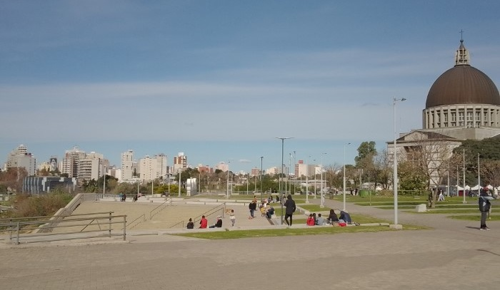

San Nicolás de los Arroyos
La ciudad de San Nicolás se encuentra en el partido de San Nicolás de los Arroyos ubicada al norte de la provincia de Buenos Aires, Argentina.
Está en el límite con las provincias de Santa Fe y Entre Ríos a la orilla del río Paraná. Rodeada por 2 arroyos: el Arroyo del Medio y el Arroyo Ramallo
Tiene una población de 165 mil habitantes, encontrándose en el puesto número 5 en cantidad de población en la provincia de Buenos Aires
Historia
San Nicolás es parte de la historia argentina, pues en ella se firmó el "Acuerdo de San Nicolás" en el año 1852 que sentó las bases para crear la Constitución Nacional.
Religión
La ciudad es famosa por celebrar el día de la Virgen Del Rosario cada 25 de septiembre. En ella se emplaza el Santuario Nuestra Señora Del Rosario de San Nicolás.
Para más información La historia del Santuario
Industria
La localidad se encuentra en medio de un cordón industrial formado por empresas como:
- Ternium
- Acindar
- Motomel
- AES
- Sidersa
Para más información La Guía SN
Naturaleza
El Eco-Parque se encuentra en uno de los brazos del río Paraná. Allí se puede observar la flora y la fauna mientras se anda en bicicleta o se camina.
Las imágenes actuales no me pertenecen (pronto las reemplazaré)
Página aún en construcción: *Última actualización 4 de julio del 2023